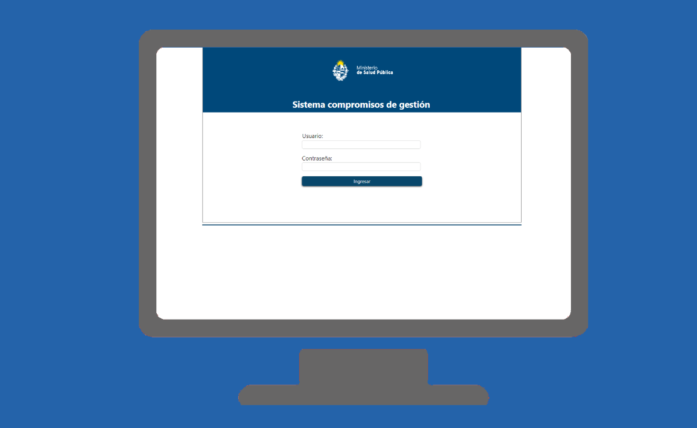

Compromisos de Gestión
Descripción
En el sistema se registran los Planes Operativos Anuales, los Objetivos Estratégicos, los Objetivos Específicos y las Metas. Mensualmente las distintas unidades cargan en el sistema el grado de avance de las metas en las cuales participan. El Sistema de Compromisos de Gestión determina en forma automática el grado de cumplimiento de las metas a partir de los datos cargados, y en consecuencia genera la liquidación de la partida. El pago tendrá frecuencia anual y el monto será proporcional a la carga horaria de cada funcionario
Información que aporta
La información sobre el cumplimiento de las metas se visualiza en gráficos de alto impacto visual, los cuales permiten de forma ágil identificar cuáles metas se están cumpliendo y cuáles no. Todos los funcionarios y funcionarias tienen el derecho de acceder a información actualizada sobre el Compromiso de Gestión que los involucra y la evolución en el cumplimiento de las metas.
Incluido en plataforma de BI
No
Base Completa / Vigencia
En producción desde 2016
Unidad Dueña del Dato
DIGESE
Enlace servicio en línea